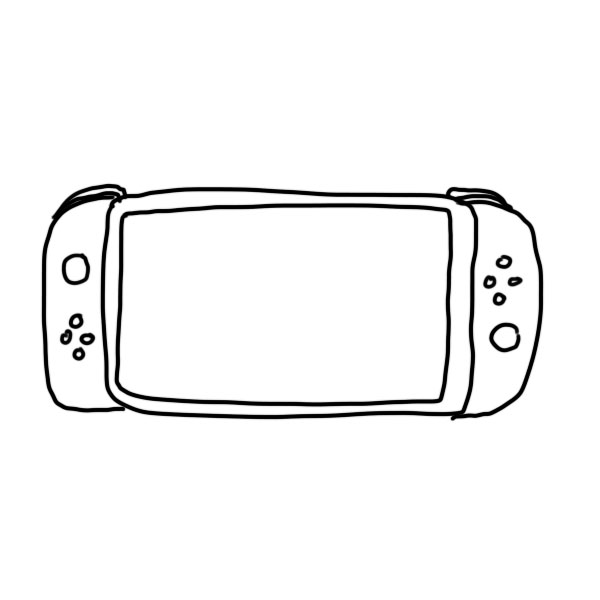
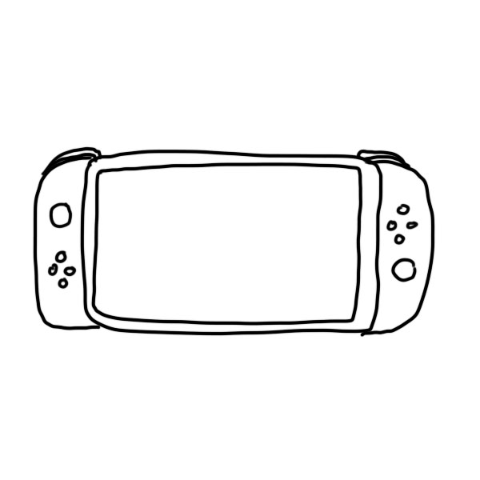

gameboy advance sp
prior exp
i realized i wanted a gameboy after playing pokemon leafgreen on my cousin's. i had no interest or knowledge in literally any other game at the time; i really just wanted to play pokemon. also, being able to beat my brother at this game was a definite reason to buy.
i realized i wanted a gameboy after playing pokemon leafgreen on my cousin's. i had no interest or knowledge in literally any other game at the time; i really just wanted to play pokemon. also, being able to beat my brother at this game was a definite reason to buy.
3ds
nostalgia, characters
i was on the fence about buying a 3ds when it first came out, but i ended up purchasing one after kingdom hearts dream drop distance was announced. i had played kh games that i rented from the library on my ps2, and i had a crush on one of the characters.
i was on the fence about buying a 3ds when it first came out, but i ended up purchasing one after kingdom hearts dream drop distance was announced. i had played kh games that i rented from the library on my ps2, and i had a crush on one of the characters.
switch
nostalgia
i decided to buy my switch after animal crossing was finally announced. i actually cried during the announcement. i would literally die for animal crossing. i did have to wait until black friday to get a deal that would justify buying such an expensive system in college.
i decided to buy my switch after animal crossing was finally announced. i actually cried during the announcement. i would literally die for animal crossing. i did have to wait until black friday to get a deal that would justify buying such an expensive system in college.
macbook air
peer pressure, design
despite being very against macs before college, i caved and bought one during my freshman year at cmu (since i was only one of three with a pc). it's not very good for most video games, but i have over 100 hours of stardew valley on it now.
despite being very against macs before college, i caved and bought one during my freshman year at cmu (since i was only one of three with a pc). it's not very good for most video games, but i have over 100 hours of stardew valley on it now.
rhythm heaven
style
rhythm heaven was the first portable rhythm game i ever got into. the characters and art style are so cute i didn't even care what game it was. it's so colorful and cute i knew that it would make me happy just watching the initial trailers.
rhythm heaven was the first portable rhythm game i ever got into. the characters and art style are so cute i didn't even care what game it was. it's so colorful and cute i knew that it would make me happy just watching the initial trailers.
animal crossing new leaf
nostalgia, gameplay
animal crossing was and is my favorite nintendo series by far. i had played my brother's copy of wild world on the ds, and i liked it so much i made him trade it to me for mario kart. after that, i bought and obsessed over the gamecube and wii versions.
animal crossing was and is my favorite nintendo series by far. i had played my brother's copy of wild world on the ds, and i liked it so much i made him trade it to me for mario kart. after that, i bought and obsessed over the gamecube and wii versions.
katamari damacy reroll
nostalgia, style
i purchased katamari damacy reroll for the switch because of my experience playing it on the ps2. i remember being interested in it because of its odd art style and direction, and how stupid and fun the characters seemed to be.
i purchased katamari damacy reroll for the switch because of my experience playing it on the ps2. i remember being interested in it because of its odd art style and direction, and how stupid and fun the characters seemed to be.
super smash bros brawl
nostalgia, characters
although i've owned super smash bros on gamecube, wii, 3ds, and switch, the wii version was definitely my favorite. i think that one of the biggest selling point of the smash games is definitely the amount of characters included and the nostalgia that comes with it.
although i've owned super smash bros on gamecube, wii, 3ds, and switch, the wii version was definitely my favorite. i think that one of the biggest selling point of the smash games is definitely the amount of characters included and the nostalgia that comes with it.